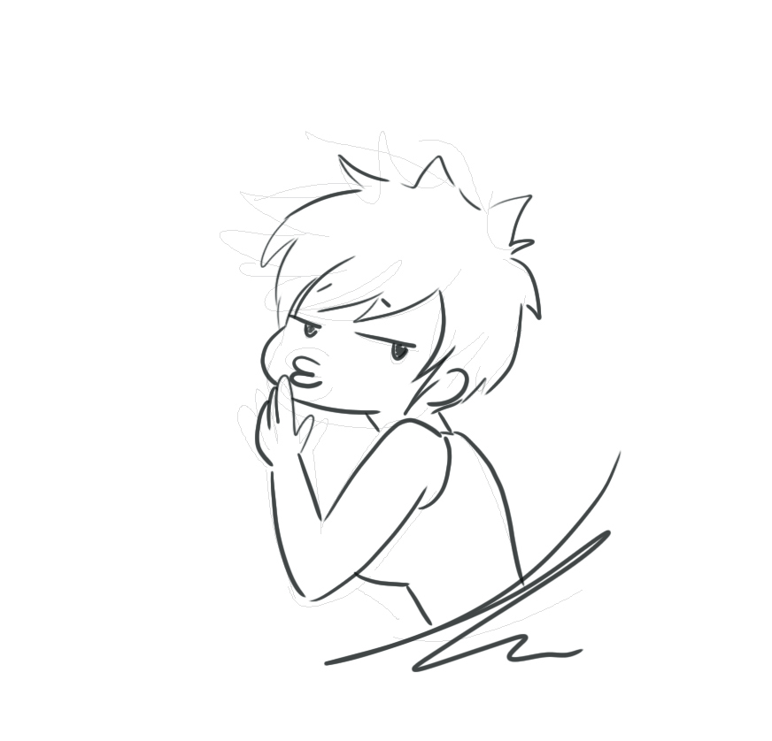

Designer as Author
Authors are just people who write novels, right? Well... debatable. There's more to it than that, but even that being said there's some published folk who I really wouldn't call an author; more like abomination creators, but MOVING ON.
Apparently it used to mean something totally different than what we think it to mean today. So... maybe it will keep evolving and changing still.These days designers have to author, direct, create, draw, organize, translate, budget, manage their time with crazy efficiency and more! And honestly half of me says, holy cow. The other half can only say "Dang, look at us go. We're killin' it"
Essentially, graphic designers get to create something from nothing and add in all their own unique touches to make one final awesome creation. I just think that's neat. The job honestly extends so far outside of the parameters of what most people think and to watch so much happen from just a few creative minds is really amazing to me. It will never stop being one of the coolest, most creative and limitless jobs out there.